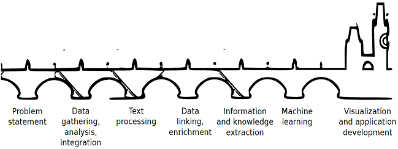

Today, a vast amount of data is available and we are interested in extracting information hidden in them. Individuals can manually extract only a part of the information. Fortunately, modern computer science offers methods which can be used to automate such extraction. Therefore, individuals can concentrate on the information and knowledge automatically extracted instead of tedious reading tons of documents. This not only saves time and money, but it will change the way various bodies work with data. This is data science.
On this website, you will find information about our group of researchers and teachers from two departments of the Faculty of Mathematics and Physics at Charles University in Prague - Department of Software Engineering and Institute of Formal and Applied Linguistics. Our scientists are specialists on various topics ranging from database management through Linked Data and ontology engineering to machine learning and computational linguistics.
If you are interested in what we do and what we offer, you have come to the right place.
We are hiring! Are you a Python programmer interested in real data science?

First of all, it is necessary to specify an issue you are addressing. For example, you can ask questions on your data or formulate a hypothesis you need to prove or disprove based on your data. You can also define data structures you would like to explore and work with. In any case, quality of your specification affects the quality of information and knowledge that we will extract from your data.
In the next step, we identify data sources which could be helpful while addressing your issue. This includes sources both inside and outside your institution. Also, we analyze relationships among the data sources. Then we integrate them together and represent them as graphs using Linked Data technologies. These technologies allow us to work very quickly and cheaply in comparison to conventional data integration technologies.
After the data sources are analyzed, we integrate them together. This does not necessarily mean copying all the data to a single place. However, it is necessary to ensure that it looks like that. In this step, we represent data from the identified sources as a mathematical graph using Linked Data technologies. These technologies allow us to work very quickly and cheap in comparison to those using conventional data integration technologies.
We know that not all data is available in a structured form. Most of the data is available in an unstructured or semi structured textual form - documents, presentations, messages, emails, notes, etc. However, we have to count with these data sources because they also contain a lot of valuable information and knowledge.
Our team uses advanced methods of computational linguistics to process textual data. We are able to deeply analyze written texts and extract structures from them. We represent such structured data together with other data as components of the graphs created in the previous step.
There are plenty of data sources available on the Internet. This includes governmental data, health care data, various kinds of statistics, data about regions, cultural data, scientific data, etc. Take a look on the so called Linked Data Cloud. These data sources can nicely enrich your data with new perspectives. We will link your data to these external data sources. As a result you will be able to work with your structured and unstructured data enriched with the external data sources in a uniform way.
Once your data are integrated and linked, we apply various analytical and statistical methods to find answers to your questions. .
Especially, we concentrate on knowledge extraction using machine learning methods. Machine learning teaches computers to learn from a set of examples. For example, we can effectively classify your documents using these methods or predict events based on previous ones.
Both raw data and information extracted from the data are usually very complex. Therefore, a user-friendly visualization is very important, e.g. a fully functional web application on top of the data.
For the last three years we have been working with various data sources provided by the public administration in the Czech Republic and converting them to the Linked Data representation. Linked Data is a set of principles which tell us how to represent and publish sets of data on the Internet so that they can be easily linked together and enriched. Our Linked Data base currently consists of 1.5 billion records and is growing. Useful web applications have been developed on top of the data we have produced. For example, Drug Encyclopedia was developed by our partner Datlowe. It allows users to search and browse interesting data about drugs. Another example is Justinian, which was developed by a team of our students. It allows users to search and browse the legislation of the Czech Republic.
UnifiedViews is a web-based software which allows you to convert your data from various data sources in various formats to a single data space. It is an ETL (Extract-Transform-Load) tool which is prepared to process many different data formats and large amounts of data. The tool produces data in the RDF format - a format which allows you to easily integrate all your data and then work with it as a single data base. This is necessary when you need to see your data sources as a single database and apply data science methods to it.
RExtractor is a system that extracts knowledge from raw unstructured texts using machine learning and computational linguistics. If you provide us with a set of documents we first analyze them using natural language processing tools. Then we develop a set of rules to extract knowledge hidden in your texts. We automate this process using RExtractor. The resulting knowledge base is designed as a set of entities and relationships between them and is represented in an ontological framework. We have applied RExtractor to processing of Czech legal documents (e.g. laws and court decisions).
JTagger is another system that applies machine learning and computational linguistics. It processes court decisions (in Czech language) and finds relationships to various kinds of legal documents mentioned in decisions. The relationships are represented in a knowledge base which links representation of legal documents in the Linked Data form. Therefore, court decisions linked to legislation can be queried as a database.
Payola is a web-based software which allows users to create cool visualization of their data, information and knowledge extracted with our tools and data science methods. Payola implements so called Linked Data Exploration - one of the theoretical models developed in our basic research projects. Its usage is very simple. You provide your data/knowledge base and Payola tells you what is the best way to visualize it.